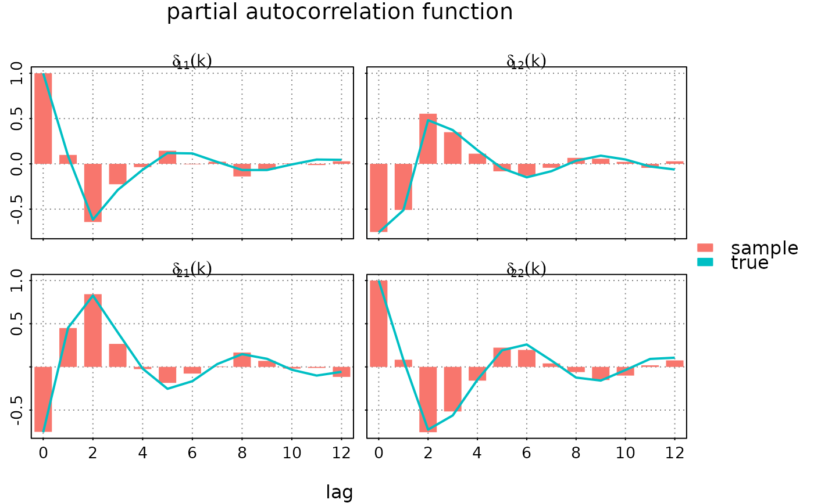
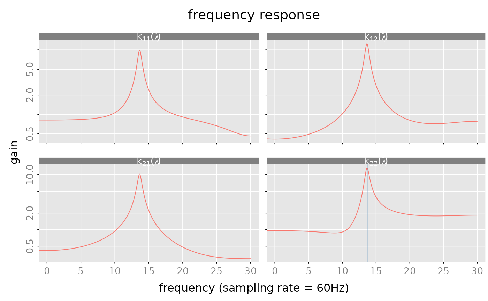
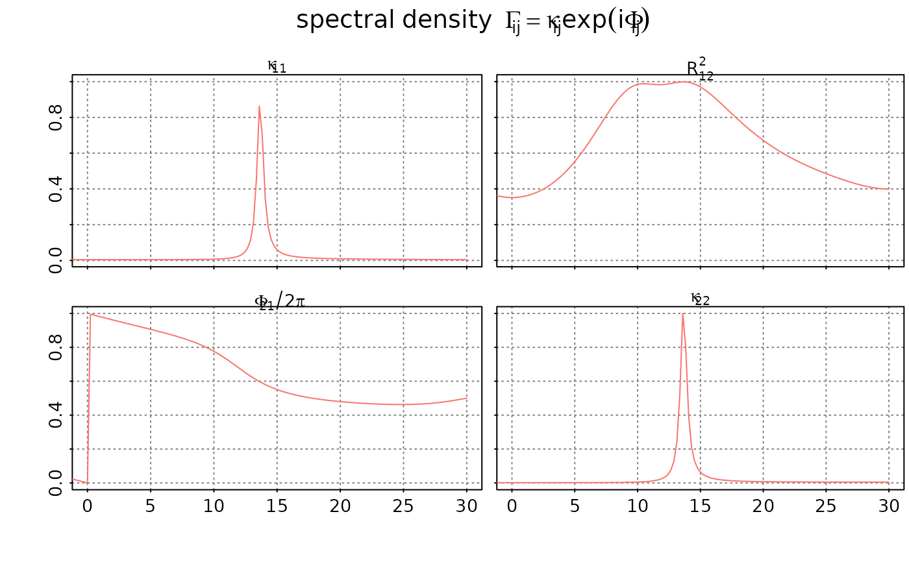
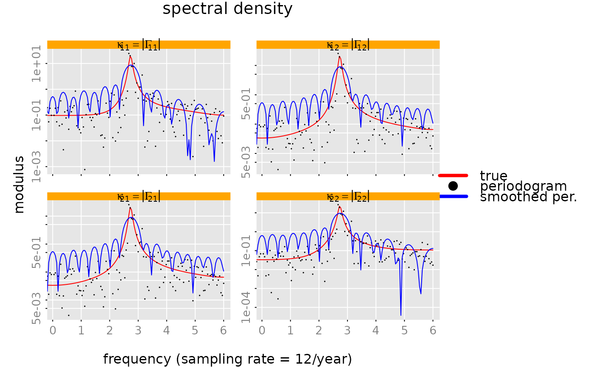

Plot Methods
plot.RdPlot methods for impulse response functions (impresp() objects),
autocovariance functions (autocov() objects),
frequency response functions (freqresp() objects) and
spectral densities (spectrald() objects).
Usage
# S3 method for class 'impresp'
plot(
x,
x_list = NULL,
xlim = c("global", "column", "subfig"),
ylim = c("row", "subfig", "global"),
main = NA,
xlab = NA,
ylab = NULL,
subfigure_main = NA,
parse_subfigure_main = FALSE,
style = c("gray", "bw", "bw2", "colored"),
col = NA,
type = "l",
lty = "solid",
lwd = 1,
pch = 16,
cex.points = 1,
bg.points = "black",
legend = NULL,
legend_args = NA,
...
)
# S3 method for class 'autocov'
plot(
x,
x_list = NULL,
xlim = c("global", "column", "subfig"),
ylim = c("row", "subfig", "global"),
main = NA,
xlab = NA,
ylab = NULL,
subfigure_main = NA,
parse_subfigure_main = FALSE,
style = c("gray", "bw", "bw2", "colored"),
col = NA,
type = "l",
lty = "solid",
lwd = 1,
pch = 16,
cex.points = 1,
bg.points = "black",
legend = NULL,
legend_args = NA,
...
)
# S3 method for class 'freqresp'
plot(
x,
x_list = NULL,
sampling_rate = 1,
unit = "",
which = c("gain", "phase", "nyquist"),
xlim = NA,
ylim = NA,
log = "",
main = NA,
xlab = NA,
ylab = NA,
subfigure_main = NA,
parse_subfigure_main = FALSE,
style = c("gray", "bw", "bw2", "colored"),
col = NA,
type = "l",
lty = "solid",
lwd = 1,
pch = 16,
cex.points = 1,
bg.points = "black",
legend = NULL,
legend_args = NA,
...
)
# S3 method for class 'spectrald'
plot(
x,
x_list = NULL,
sampling_rate = 1,
unit = "",
which = c("modulus", "phase", "coherence"),
xlim = c(0, 0.5) * sampling_rate,
ylim = "row",
log = "",
main = NA,
xlab = NA,
ylab = NA,
subfigure_main = NA,
parse_subfigure_main = FALSE,
style = c("gray", "bw", "bw2", "colored"),
col = NA,
type = "l",
lty = "solid",
lwd = 1,
pch = 16,
cex.points = 1,
bg.points = "black",
legend = NULL,
legend_args = NA,
...
)Arguments
- x
impresp(),autocov(),freqresp()orspectrald()object.- x_list
(optional) list of additional objects (of the same class as "
x").- xlim, ylim
determine the axis limits of the subfigures. E.g.
xlim = 'column'means that all subfigures in a column use the same x-axis limits. Analogouslyy = 'row'implies that the subfigures in a row share the same limits for the y-axis.
For the "freqresp" and "spectrald" plots the parameterxlimmay also be a numeric 2-dimensional vectorxlim = c(x1,x2). In this case all sub-figures use the given limits for the x-axis. Furthermore the limits for the y-axis are computed based on the corresponding data subset. This option may be used to "zoom" into a certain range of frequencies.- ...
not used.
- sampling_rate
(number) sampling rate.
- unit
(character string) time or frequency unit.
- which
(character string) what to plot. This parameter is only used for plotting frequency response objects and spectral densities. See details below.
- log
a character string which contains "x" if the x axis is to be logarithmic, "y" if the y axis is to be logarithmic and "xy" or "yx" if both axes are to be logarithmic. This parameter is only used for plotting frequency response objects and spectral densities. Note that a logarithmic y-axis only makes sense when plotting the moduli of the frequency response or the spectral density.
Value
The plot methods return (invisibly) a "closure()", subfig say, which may be used to
add additional graphic elements to the subfigures. The call opar = subfig(i,j)
creates a new (sub) plot at the (i,j)-th position with suitable margins and
axis limits. See the examples below.
Details
If x is an \((m,n)\) dimensional object then the plot is divided into an
\((m,n)\) array of subfigures. In each each of the subfigures the respective
\((i,j)\)-th element of the object x is displayed. The methods allow
simultaneous plotting of several objects, by passing a list x_list
with additional objects to the procedure. In the following we assume that
x_list contains \(k-1\) objects, i.e. in total \(k\) objects
are to be plotted.
The parameter "xlim" determines the x-limits of the subfigures:
xlim='global' uses the same x-limits for all subfigures (the limits are
determined from the data). In the case of frequency response or spectral density
objects one may also pass a two-dimensional vector xlim = c(x1,x2) to
the plot method. In this case all subfigures use these values as common x-limits.
xlim='column' means that all sub figures in a "column" have
the same x-limits. The limits are determined from data.
Finally xlim='subfigure' means that each subfigure gets its own
x-limits (determined from data).
Quite analogously the parameter ylim determines the limits for the y-axes.
(Just replace 'column' by 'row').
The plot methods have quite a number of optional design parameters. In most cases
these parameters are interpreted as follows.
NA values mean that the methods use some suitable defaults.
E.g. the labels for the x- and y-axis are chosen according to the class of the
object(s) to be plotted and the parameter "which".
NULL values for the (optional) parameters mean that the respective graphic element is omitted.
E.g. subfigure_main = NULL skips the titles for the subfigures.
The titles for the (m,n) subfigures are determined by the parameter subfigure_main.
One may pass an \((m,n)\) character matrix or a scalar character (string) to the procedure.
If subfigure_main is a scalar (character string) then the procedures creates
the respective titles by replacing the "place holders" i_ and j_ with the
respective row and column number. See the examples below.
The "style" parameters col, type, ..., bg.points determine the appearance of the
"lines" for each of the k objects. (If necessary these values are "recycled".)
See also graphics::lines() and graphics::points() for a
more detailed explanation of these parameters.
If more than one object is to be plotted (the optional parameter x_list is not empty)
then a suitable legend may be added with the parameters legend and
legend_args. Note that legend should be a character (or expression) vector of
length k.
The parameter "which" determines what to plot in the case of
"freqresp" or "spectrald" objects.
- gain,modulus
plot the moduli
abs(x[i,j])versus frequencies.- phase
plot the arguments
Arg(x[i,j])versus frequencies.- nyquist
plot the imaginary part
Im(x[i,j])versus the real partRe(x[i,j]).- coherence
plot the coherence. This plot is somewhat special. The "coherence matrix" is symmetric and and the diagonal entries are are equal to one (for all frequencies). Therefore the entries on and below the diagonal contain no additional information. For this reason the subfigures above the diagonal display the coherence, the subfigures below show the "scaled arguments"
Arg(x[i,j])/(2*pi)+0.5and the subfigures on the diagonal display the scaled auto spectra of the \(m\) component processes.
These plot methods use the internal helper function rationalmatrices::plot_3D().
Examples
set.seed(1995) # set seed to get reproducible results
n.obs = 2^8
m = 2
s = 3
# generate a random, stable and minimum phase state space model
# for a bivariate process (x[t], y[t])
model = test_stspmod(dim = c(m,m), s = s, bpoles = 1, bzeroes = 1)
model$names = c('x[t]', 'y[t]')
# simulate data
data = sim(model, n.obs = n.obs)
#### plot impulse response
# overlay three different "orthogonalization" schemes
plot(impresp(model), list(impresp(model, H = 'eigen'),
impresp(model, H = 'chol')),
legend = c('none','chol','eigen'),
legend_args = list(title = 'orthogonalization', fill = NA, border = NA, bty = 'n'),
style = 'colored', ylim = 'subfig', xlab = NA)
#### plot partial autocorrelation function
# overlay with the corresponding sample partial ACF
par(lend = 1) # in order to get a "barplot"
plot(autocov(data$y, lag.max = 12, type = 'partial'),
list(autocov(model, lag.max = 12, type = 'partial')),
subfigure_main = 'delta[i_*j_](k)', parse_subfigure_main = TRUE,
style = 'bw', type = c('h','l'), pch = 19, lwd = c(15,2),
legend = c('sample', 'true'))

par(lend = 0) # reset 'lend=0'
# frequency response of the model
n.f = 2^11
frr = freqresp(model, n.f = n.f)
#### plot "gain"
subfig = plot(frr, which = 'gain',
sampling_rate = 60, unit = 'Hz',
ylim = 'row', log = 'y',
subfigure_main = 'k[i_*j_](lambda)', parse_subfigure_main = TRUE)
# mark the frequencies with the max gain!
junk = unclass(frr$frr)
i_max = apply(Mod(junk), MARGIN = c(1,2), FUN = which.max)
f_max = matrix(60*((0:(n.f-1))/n.f)[i_max], nrow = 2, ncol = 2)
for (i in (1:2)) {
for (j in (1:2)) {
subfig(i,j)
abline(v = f_max[i,j], col = 'steelblue')
}
}

#### create a "Nyquist" plot of the frequency response
plot(frr, which = 'nyquist',
xlim = 'subfig', ylim = 'subfig',
subfigure_main = 'k[i_*j_](lambda)', parse_subfigure_main = TRUE)
# compute spectral density
spd = spectrald(model, n.f = 256)
#### plot the coherence
# the subfigure above the diagonal shows the coherenec between
# the two component proceses x[t] and y[t]
# the sub figures on the diagonal show the scaled autospectra
# of the two component processes x[t] and y[t].
# and the subfigure below the diagonal shows the
# phase/argument of the cross spectral density between the
# two component processes x[t] and y[t]
plot(spd, sampling_rate = 60, unit="Hz",
main = expression(spectral~density~~Gamma[i*j] == kappa[i*j]*exp(i*Phi[i*j])),
which = 'coherence',
style = 'bw')

# periodogram
per = spectrald(data$y)
# smoothed periodogram
sacf = autocov(data$y, lag.max = floor(sqrt(n.obs)))
per2 = spectrald(sacf, n.f = 256)
#### make a plot of the absolute value of the spectral density,
# of the periodogram and the smoothed periogram.
# with a logarithmic y-axis
# skip zero frequency, since the periodogram is zero at lambda=0
plot(spd, list(per, per2), sampling_rate = 12, unit = '/year', which = 'modulus',
log = 'y', xlim = c(1/n.obs, 0.5) * 12, # skip zero frequency
legend = c('true','periodogram', 'smoothed per.'),
legend_args = list(bty = 'n', col = NA, lty = NA, pch = NA, lwd = 4),
style = 'colored', ylim = 'subfig',
subfigure_main = 'kappa[i_*j_] == group("|", Gamma[i_*j_], "|")',
parse_subfigure_main = TRUE,
col = c('red', 'black', 'blue'), type = 'o', lty = c(1,0,1),
pch = c(NA, 19, NA), cex.points = 0.1)

set.seed(NULL) # reset seed